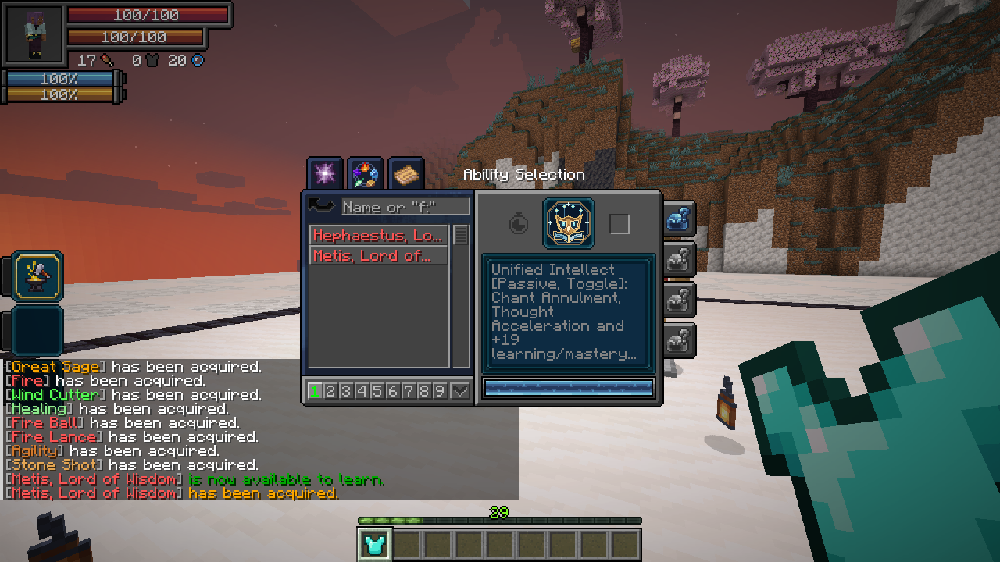
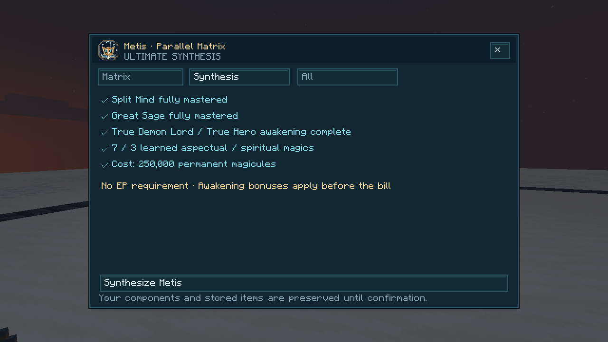
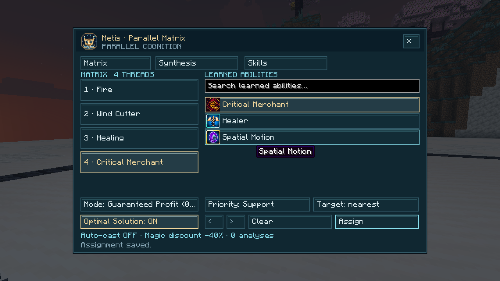
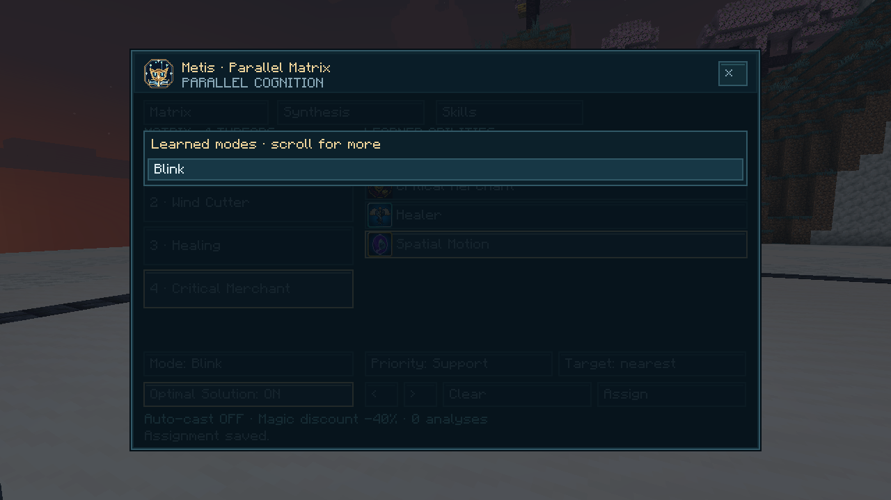
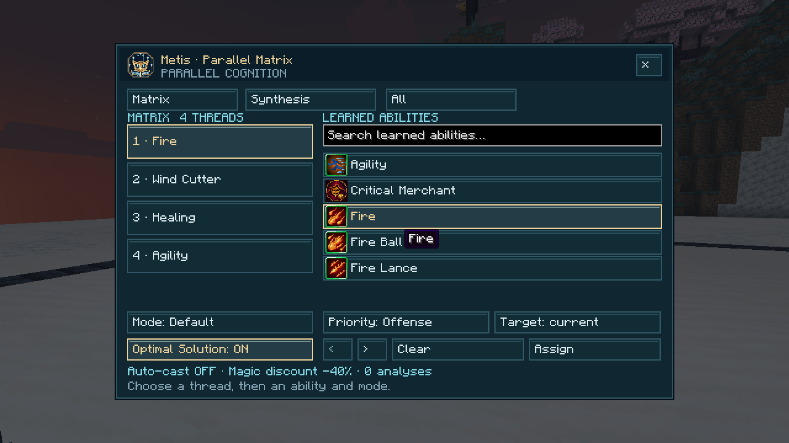

On this page
Obtaining
Missing a component? The Archivist offers one paid Unique Skill lesson per player. The taught component still needs to be mastered before synthesis.
Owning either component reveals the unfinished Metis entry in Skills → Ultimate. Activate it to open Synthesis, meet the requirements and confirm. Awakening bonuses apply before the acquisition cost. Both components are replaced by learned, unmastered Metis. Great Sage’s stored items, the Split Mind assignment and affected presets are retained. Autonomous Sage starts off so you can review the matrix first.

Unified Intellect · Passive, Toggle
- +19 learning and mastery points, Chant Annulment and Thought Acceleration.
- Automatically analyze visible magic circles within 32 blocks and learn eligible magic using Tensura’s normal copy and acquisition rules. Your own circles and already learned spells are skipped.
- Record the elemental defenses of combat opponents. Existing resistances and nullifications stay intact.
Damage type: none.
Parallel Matrix · Active, Press
Open the matrix to assign three learned abilities, or four when mastered: aspectual/spiritual magic, active skills and arts (including Battlewills). Select a thread on the left, an ability on the right, then a learned mode. Each ability can occupy one thread. Search narrows the list; use the All / Aspectual / Spiritual / Skills / Arts filter and scroll within the list on small screens.
Menu-opening modes are excluded. For example, Spatial Motion’s Blink is assignable but its Warp menu is not. Great Sage’s crafting/refining and Prospector’s refining are also omitted. Assignment packets and saved threads are checked again on the server. Automation uses the main activation, not shift shortcuts. Passive-only skills, automation controllers, world jumping and copied-technique containers are not assignable.


Choose a Healing, Support or Offense priority band, evaluated in that order. This controls scheduling; the ability’s native role controls its target. Offensive spells can favor your current combat target or the nearest enemy within 32 blocks. Self-healing and support remain self-directed regardless of the selected priority band.
Damage type: none directly.

Autonomous Sage · Active, Toggle
Run the assigned abilities independently while moving, fighting and casting manually. Offensive spells target hostile mobs or combat opponents, respecting alliances, PvP and line of sight. Healing is attempted below 90% HP (Healer also checks SHP when mastered). Recognized cleansing modes check their specific removable conditions, even at full HP. Support avoids reapplying an active buff from the same spell.
Background casting does not swing your arm. Direct automatic spells have independent hurt windows. Distinct native magic projectiles also land independently, including manually cast projectiles. Repeated pulses from one persistent source keep their native timing. Ordinary weapon damage and defensive invulnerability remain separate.
Automatic aspectual/spiritual spells cost 30% fewer magicules, increasing to 40% fewer when mastered. Assigned skills and arts retain their normal costs. Native aura costs, cooldowns, anti-skill/anti-magic and activation rules still apply. Automatic skill casting does not use a manual recast override to cancel an active stance during cooldown. Manual use of an ability takes priority over automation of that same ability. Other threads continue independently.
Damage type: each assigned ability keeps its native damage type and effects.
Automatic cleansing
Assign the learned mode in Parallel Matrix. These modes target you, even when an enemy is in front of you. They cast only when one of the following conditions applies:
| Ability / mode | When Metis casts it |
|---|---|
| Antidote | Poison, Nausea or Weakness; mastered Antidote also treats Fatal Poison using its native level/duration reduction. Low HP alone does not trigger it. |
| Healer — Heal | Infection, HP below 90%, or mastered Healer with SHP below 90%. |
| Chef | Severance, HP below 90%, or a harmful effect outside Tensura’s protected skill-effect tag that you can afford to remove. |
| Lust — Invigorate | HP below 90% or a harmful effect outside the protected skill-effect tag. Its native cleansing also removes unprotected beneficial effects; those effects alone never trigger it. |
| Predator / Gluttony — Isolation | Severance or an affordable harmful effect, with an empty main hand. Holding an item pauses automatic Isolation because the native mode can modify equipment instead. |
| Law Manipulation — Abnormality Cleanse | Severance, Cook’s maximum-HP reduction, Magic Interference or an effect in Tensura’s Law Manipulation cleansing tag. |
| Spatial Domination — Spatial Cleanse | Severance only. The mode must be learned; native costs determine how much Severance is removed. |
| Reverser — Inverted Fusion [Buff] | A harmful effect outside Tensura’s protected skill-debuff tag, excluding Magicule Poison. Mastered Reverser requires an empty main hand for automatic use to avoid changing held potions or engravings. Native reversal/removal rules apply. |
Native costs, cooldowns and activation restrictions still apply. Metis checks again before each cast and while preparing a cleanse, so a status removed by another thread does not keep triggering it. Mixed healing/cleansing modes still heal when needed without a removable debuff.
Law Manipulation’s default tag includes Hunger, Poison, Blindness, Nausea, Darkness, Mining Fatigue, Slowness, Weakness, Burden, Fragility, Curse, Fatal Poison, Paralysis, Petrification, Hypnosis and Magic Interference. Datapacks can change native tags; Metis reads the active tags.
These are explicit rules for the listed Tensura modes. Enemy buff removal, transformation cancellation and passive revival cleansing are not treated as self-cleansing actions. Degenerate’s Separate retains its native offensive/manual targeting; Metis does not use its situational self-cleanse. Other addons’ modes are not assumed to cleanse solely because of their name.
Optimal Solution · Passive, Toggle
Enable it in the matrix while Unified Intellect is on. For aspectual/spiritual magic, Metis avoids assigned offensive spells covered by a target’s active nullifications and ranks otherwise available spells by elemental resistance or vulnerability within their priority band. It chooses among your assigned spells; it does not weaken defenses or bypass them. Skills and arts keep normal priority scheduling without guessing their damage type.
Damage type: none.
Inherited Great Sage utilities
Analytical Appraisal has analysis level 20, or 40 when mastered. It retains the native toggle, shift-press filtering and +15/+25 appraisal distance bonus.
Analysis guarantees a copy when an eligible, unowned skill is available and native copying/acquisition protections permit it. In addition to Great Sage’s intrinsic/common/extra pool, it can learn resistances and nullifications. The target keeps their skill. Unique and Ultimate skills, temporary skills and protected skills remain excluded. Living-target range is 10 blocks; eligible magic-projectile range is 30 blocks. Success cooldown: 5 seconds, or 2 seconds when mastered. An unavailable attempt has a 1-second retry delay. Levels and success cooldowns are configurable.
Refine / Craft opens native repeat crafting; shift-press opens refining. Stored items remain in the same shared container.
Damage type: none directly.